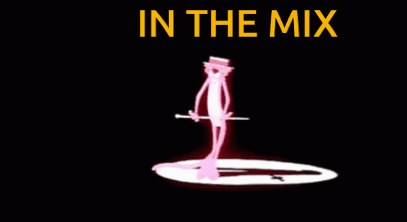
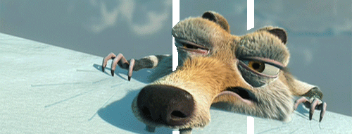
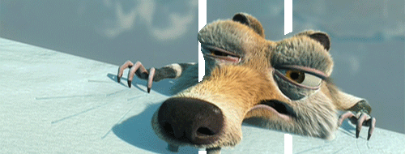

MEGAMIX
Un megamix (prefijo «mega», del griego μέγας, que significa 'grande', entendido como 'un millón'; y «mix», del inglés 'mezcla') parte de la idea de un collage musical y sonoro, en el que el productor o megamixer combina elementos de diferentes canciones para crear un conjunto unitario.Es a finales de los años setenta cuando entre algunos disc-jockeys norteamericanos surgió una nueva forma de crear música, consistente en mezclar canciones de una manera estética y original, sin que por ello el conjunto dejase de ser bailable. El resultado era grabado en cinta magnetofónica para uso propio del disc-jockey, que reproducía su trabajo en las discotecas en las que trabajaba, esgrimiéndolo como sello personal, y empleando para ello los éxitos de música disco, funk y soul de la época. Estas fueron las raíces de los discos de mezclas tal y como los conocemos en la actualidad.
Leer másSAGAS
Leer más
HISTORIA
Los comienzos del mix:A finales de los años setenta, nació un nuevo concepto musical entre los discjockeys norteamericanos que consistía en recopilar temas de actualidad (de actualidad de entonces, se sobreentiende.) e incluirlos en un montaje de forma enlazada.De este modo se lograba conseguir un alto nivel estético que a la vez era bailable. La aceptación de público llegó a ser muy importante, lo que originó un mercado pirata de cintas que posteriormente se convirtieron en discos. La mente de los directores de las discográficas americanas no estaba preparada para esto y solo reaccionaron varios años mas tarde, cuando comprobaron el alto nivel de ventas que alcanzaban las producciones de mixes piratas.
Leer másLos primeros Megamixes españoles
Desde su concepción, y hasta mediados de la década de los 80, los mixes eran realizados con material totalmente analógico: platos giradiscos, mesas de mezclas y magnetófonos de bobina abierta. Sin salir de esta concepción artesanal, el Studio 54 Connection, concebido por Raúl Orellana, y publicado por Blanco y Negro Music, se convirtió en el primer mix puesto a la venta de forma legal en España. No obstante, fue la discográfica Max Music la que acuñó el termino 'megamix' en el primer volumen de la saga Max Mix, siendo este mezclado por Javier Ussía y Mike Platinas.En el proceso de realización de las primeras obras se llegaban a emplear varias copias de los mismos vinilos, para paliar el empeoramiento progresivo de la calidad del audio, causado por el lógico deterioro del surco.
Así, se registrarían los fragmentos de los temas en cinta magnetofónica para su posterior manipulación. Al concepto tradicional de 'mix' se sumaba la posibilidad de agregar efectos de repetición mediante el corte y pegado manual de cinta magnetofónica, así como el empleo de otros dispositivos electrónicos como ecualizadores o procesadores de dinámica.Con estos elementos fue elaborado el Max Mix, autoproclamado como "El primer megamix español". Publicado en 1985 por Max Music, fue elaborado a partir de los grandes éxitos del Italo disco, Euro-Disco y Hi-NRG del momento. Esta obra supuso toda una revolución en lo que a los discos de mezclas se refiere. Unos meses más tarde se publicaría el Max Mix 2, un trabajo aún más definido y original, en gran medida a causa de la mayor libertad creativa brindada por los directivos de Max Music a Javier Ussía y Mike Platinas para la elaboración de los efectos. En la compañía rival, Raúl Orellana tuvo que lidiar con el empuje dado por Max Music, acompañado fielmente por Quim Quer como asistente. Así es como se iniciaría la saga más exitosa para Blanco y Negro: el Bolero Mix, que hoy en día continúa en activo después de casi treinta años desde su primera entrega. Raúl Orellana se encargará de esta producción hasta su quinta entrega, tras la que recogería el testigo el joven disc-jockey y locutor Quique Tejada, quien se consagró rápidamente como otro de los grandes megamixers españoles.
El avance de la tecnología durante la década permitió el empleo progresivo de nuevos y más sofisticados dispositivos, como es el caso del sampler o de la tecnología MIDI. En el caso de los samplers, en los comienzos estos aparatos únicamente permitían grabar una serie limitada de muestras, con muy pocos segundos de duración cada una de ellas, lo que suponía grabar las secuencias melódicas en la cinta magnetofónica por partes, para luego unirlas mediante corte y pegado.
La oferta de megamixes se diversificó durante la segunda mitad de los 80 casi tanto como lo hicieron los géneros musicales de baile. En ese periodo algunos de nombres más destacados en cuanto a creacón de "megamixes" fueron Toni Peret, José María Castells, Raúl Orellana, Javier Ussía, Mike Platinas, Quique Tejada, Oriol Crespo, Juanma Ortega, Gino, Stephanelli, Dimas Carbajo etc.
Los 80 vieron surgir y evolucionar a multitud de estilos diferentes, además del Italo disco y el Hi-NRG: House, Synth Pop, Electro funk... y más tarde el Acid House y el New Beat. De todos ellos se sirvieron los creadores para plasmar las nuevas tendencias musicales en cada megamix que salía a la venta.
Megamix de la semana

 
